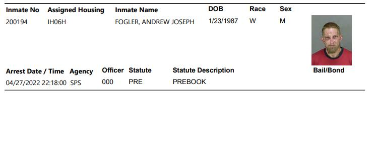

Timeline photos
My friend Andrew is currently in jail.
He was one of those people that the city did not house when they swore they were going to house everyone when they shut down our first village.
I moved him back into the woods that day. He lived there until I started sheltering people again. He was the first person to move back with us. He then got our vinyl tiny house that we bought from Sam's Club. (It's a shed).
At our last Sunday's church meeting I asked him if he was happy. He said no. (He always says no.) I asked him what he wanted. He said he couldn't do anything because his identity had been stolen.
I asked him if there was anything that he could do as a next step. He was really reluctant. He then said that I had just given him a piece of mail that was about a social security payment he was supposed to receive. He said that the payee (the person who gets the money) was someone he didn't know. I asked him if I could see the paper after the meeting. He said I could.
I went to his house and asked him to see the paper. He said he had thrown it way.
I TELL YOU ALL THIS FOR ONE REASON: We must understand the complexity of the homeless condition.
I personally believe he has some sort of significant mental illness. He insists that he is fine. It's other people that are the problem. He never talks about what he could do. He only talks about what other people are doing to him.
There was a very good reason the city couldn't house him: He's virtually impossible to house. Unless a family member would take him in, I can't see how there will ever be a path to housing for Andrew in his current state of mind. And this has been his state of mind for over 5 years.
He's not happy with his tiny house. But he has electricity, internet access and access to a toilet and a shower.
Until we understand people like Andrew we are never going to get to the bottom of the homeless situation in America and the world.
THERE IS A HUGE OPPORTUNITY to help Andrew while he's in jail. But services have been so stripped back in our prison system, there is very little likelihood he's going to get help. But it is also possible that he might go into Oriana House's "Residential Institutional Probation Program (RIPP)" or "Community Alternative Sentencing Center (CASC)" Maybe they can help him.